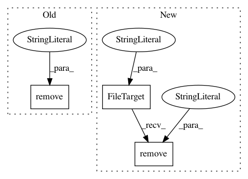

60678df6c0c5a5862388fb8aed71216192173341,test/test_actions.py,TestActions,testOptionRunMode,#TestActions#,816
Before Change
def testOptionRunMode(self):
"""Testing run mode option for action"""
if os.path.isfile("a.txt"):
os.remove("a.txt")
//
script = SoS_Script(r"""
[10]
run: run_mode="prepare"
After Change
def testOptionRunMode(self):
"""Testing run mode option for action"""
FileTarget("a.txt").remove("both")
//
script = SoS_Script(r"""
[10]
run: run_mode="prepare"
In pattern: SUPERPATTERN
Frequency: 3
Non-data size: 3
Instances
Project Name: vatlab/SoS
Commit Name: 60678df6c0c5a5862388fb8aed71216192173341
Time: 2016-09-17
Author: ben.bog@gmail.com
File Name: test/test_actions.py
Class Name: TestActions
Method Name: testOptionRunMode
Project Name: vatlab/SoS
Commit Name: 0eca6cc07bd848239f2b82e62c69b1152e8c36b8
Time: 2016-09-20
Author: ben.bog@gmail.com
File Name: test/test_execute.py
Class Name: TestExecute
Method Name: testDependsExecutable
Project Name: vatlab/SoS
Commit Name: 0eca6cc07bd848239f2b82e62c69b1152e8c36b8
Time: 2016-09-20
Author: ben.bog@gmail.com
File Name: test/test_execute.py
Class Name: TestExecute
Method Name: testOutputExecutable